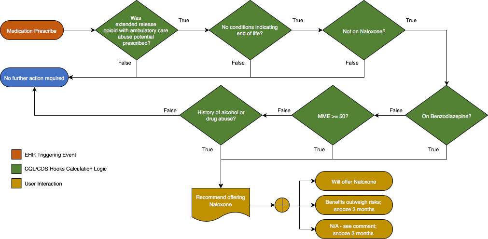
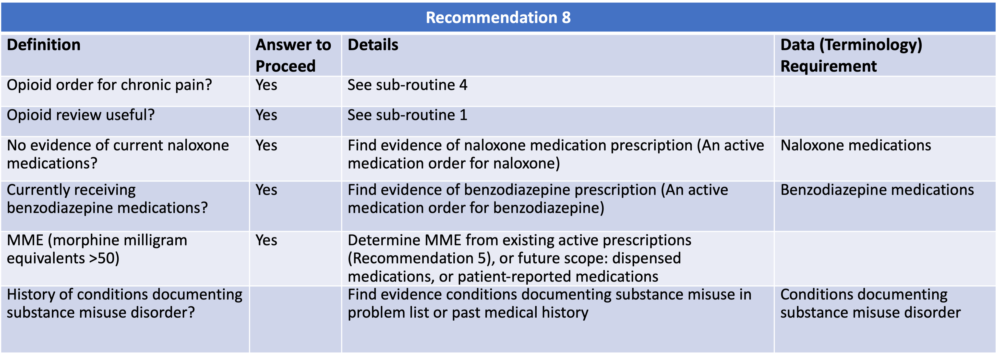

Before starting and periodically during continuation of opioid therapy, clinicians should evaluate
risk factors for opioid-related harms. Clinicians should incorporate into the management plan strategies
to mitigate risk, including considering offering naloxone when factors that increase risk for opioid
overdose, such as history of overdose, history of substance use disorder, higher opioid dosages
(≥50 MME/day), or concurrent benzodiazepine use, are present (recommendation category: A, evidence type: 4).
8.9.1 Functional Description
{% include recommendation08-functional-description.html %}


For Chronic Pain
{% include for-chronic-pain-definitions.html %}
Opioid Review Useful
{% include opioid-review-useful-definitions.html %}
8.9.2 Content
The following artifacts formalize the description of the logic and behavior defined by this recommendation.